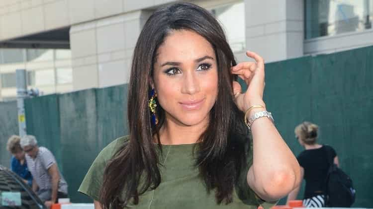
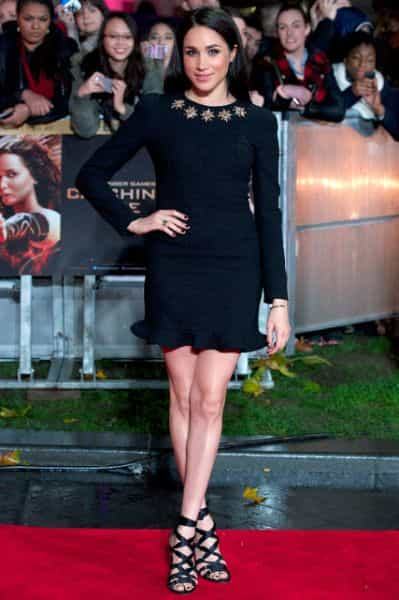

This account syndicates news from other media outlets.


American, mixed-race and “fiercely independent”: Meghan Markle, Prince Harry’s actor girlfriend, will breathe fresh air into the British royal family when she marries Queen Elizabeth II’s grandson next Spring.
Playing a lawyer in the hit television show “Suits”, the 36-year-old actress with long flowing black hair was barely known in Britain when her name appeared on newspapers’ front pages last October.
The tabloids based their report of a relationship between Harry and Meghan, who lived in Toronto, Canada, on pictures showing them wearing the same tricoloured wristband.

The relationship was formalised by Kensington Palace, which handles communication for Prince Harry, in November in a most unexpected way.
Exasperated by the media frenzy, the palace released a statement attacking the “sexism” and “racism” Meghan Markle faced on social media.
It also blasted the press for “harassing” the actress.
Four days earlier, The Sun, Britain’s top-selling newspaper, ran a piece on its front page titled “Harry’s girl on Pornhub,” the adult video website.
But the actress’s only crime had been to take off her shirt while filming what the newspaper described as a “steamy scene” for her show “Suits,” which then made it onto the pornographic website.

The couple made their first official public appearance together in September, attending the opening ceremony of the third Invictus Games — created by Harry for disabled or wounded soldiers and veterans.
“We’re two people who are really happy and in love,” Markle told Vanity Fair shortly before the event.
With a degree in communication, Markle appears to have navigated her career without a hitch.
Like Harry, she does humanitarian work.
She is also telegenic, practises yoga and drinks detox drinks including “green juices,” according to her Instagram account.
Tabloids were quick to point out that the actress, three years Harry’s senior, is divorced, unearthing pictures of her first marriage (2010-2013) with an American producer.
However, none of this was enough to derail a royal wedding, which will take place early next year, according to Monday’s announcement.
Quite the contrary, says Penny Junor, Prince Harry’s biographer: “I think that would be no problem at all, and the fact that she is of mixed race might even be a bonus,” she told AFP.
“It would show Harry, a senior member of the Royal Family, to be a thoroughly modern man — not a precious, strange creature from another planet, which is how the royals are sometimes seen”.
Some believed, however, that her proud independence — the actress had maintained a long-distance relationship with the prince for much of their courtship — could be a source of contention for the Windsor family.
“I’ve never wanted to be a lady who lunches — I’ve always wanted to be a woman who works,” Markle once wrote on her blog “Tig”.
Popular tabloid the Daily Mail wrote that it was “easy to see what happy-go-lucky Prince Harry and Meghan Markle have in common.”
“What’s less clear is…what some female members of the Royal Family will make of a fiercely independent young woman”.
Beyond her role as an ambassador for the Canadian charity “World Vision Canada,” which works to improve children’s lives in developing countries, Markle regularly asserts the feminist beliefs she forged during her childhood in California.
“Aged 11, she forced a soap manufacturer to alter an advert after she wrote a letter to then First Lady Hillary Clinton and other high-profile figures complaining that it implied women belonged in the kitchen,” wrote the BBC.
Nowadays, the actress also campaigns for women’s rights alongside the UN.
Don’t Miss: Do Not Follow In The Footsteps Of Norway’s Crown Prince By Marrying A Single Mom